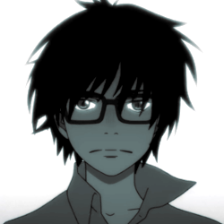

DarknessEyes23
Cześć! Jestem samozwańczym artystą, a także amatorem webdesignu. Moje zamiłowanie do CSS-a i HTML-a zostało wzbudzone podczas
pobytu na serwisie FANDOM (dawniej Wikia). Tam też poznałem podstawy tych dwóch prostych języków. W wolnych chwilach zgłębiam
techniki projektowania stron internetowych, a także projektuję wyglądy wiki. Relaksuję się oglądając dobry serial lub anime,
grając w gry wideo, czytając książkę, komiks albo mangę.